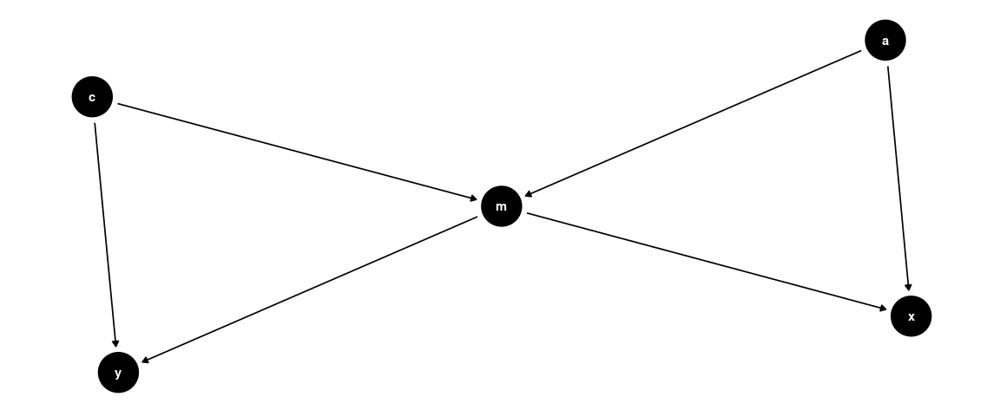
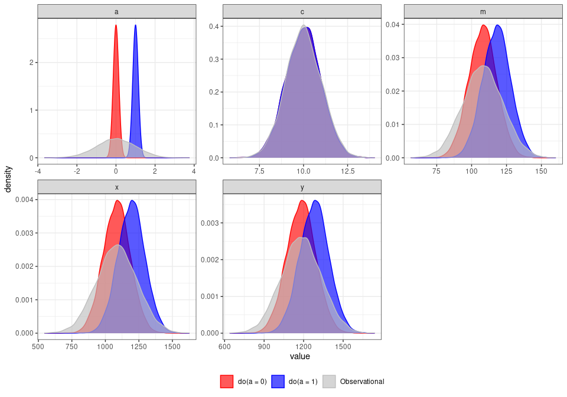

raldag helps you create DAGs and generate data from them.
Specify how nodes generate data and evaluate inputs
Declare the nodes of your DAG and how data is generated by those nodes with the following code:
c <- v("c", .f = d(~ rnorm(n = 10^4, mean = rsum(.x) + 10, sd = 1)))
a <- v("a", .f = d(~ rnorm(n = 10^4, mean = rsum(.x) , sd = 1)))
x <- v("x", .f = d(~ rnorm(n = 10^4, mean = rsum(.x) + 5, sd = 1)))
y <- v("y", .f = d(~ rnorm(n = 10^4, mean = rsum(.x) + 2, sd = 1)))
m <- v("m", .f = d(~ rnorm(n = 10^4, mean = rsum(.x) + 8, sd = 1)))In this case, the node c generates 1000 observations with a mean equal to the sum of its input edges plus 10 and a standard deviation of 4.
Declare causal connections
Causal connections between nodes as well as coefficients are specified with the graph syntax from ralget

Generate data from DAG
Now that we have a DAG with an underlying data generating process, we can simulate data:
g %>% simulate(seed = 123)
#> # A tibble: 10,000 x 7
#> sim_id a c m x y label
#> <int> <dbl> <dbl> <dbl> <dbl> <dbl> <chr>
#> 1 1 2.37 9.81 130. 1329. 1401. simulation set
#> 2 2 -0.167 10.3 110. 1101. 1203. simulation set
#> 3 3 0.927 9.46 111. 1126. 1208. simulation set
#> # … with 9,997 more rowsIntroduce interventions
We can also examine causal effects using interventions, inspired by Pearl’s do-calculus.
For example, we can set a to 0:
g %>% manipulate(a = 0) %>% simulate(seed = 123)
#> # A tibble: 10,000 x 7
#> sim_id a c m x y label
#> <int> <dbl> <dbl> <dbl> <dbl> <dbl> <chr>
#> 1 1 0 9.81 106. 1069. 1164. simulation set
#> 2 2 0 10.3 111. 1119. 1220. simulation set
#> 3 3 0 9.46 102. 1024. 1116. simulation set
#> # … with 9,997 more rowsAnd we could compare that with what happens when a is set to 1:
g %>% manipulate(a = 1) %>% simulate(seed = 123)
#> # A tibble: 10,000 x 7
#> sim_id a c m x y label
#> <int> <dbl> <dbl> <dbl> <dbl> <dbl> <chr>
#> 1 1 1 9.81 116. 1179. 1264. simulation set
#> 2 2 1 10.3 121. 1229. 1320. simulation set
#> 3 3 1 9.46 112. 1134. 1216. simulation set
#> # … with 9,997 more rowsCompare intervention distributions
Here’s how our intervention on a has affected the variables in our DAG/DGP.
bind_rows(obs, do0, do1) %>%
gather(var,value, -sim_id,-label) %>%
plot_distributions()
Installation
You can install the development version from GitHub with:
# install.packages("devtools")
devtools::install_github("ianmoran11/raldag")